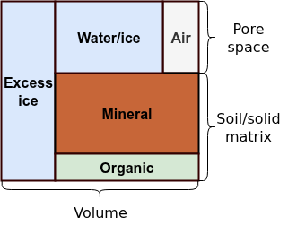

Soil stratigraphy
This page is a work in progress. If you have any questions or notice any errors, please raise an issue.
Overview
Soil composition and material properties
The subsurface soil column consists of multiple material constituents that determine its physical and chemical properties. These constituents include water and ice occupying the pore space, air filling unsaturated pores, and a solid matrix composed of mineral and organic material. To accurately represent many soil processes in land surface models, it is necessary to characterize both the lateral and vertical distribution of each soil constituent along with its relevant material properties.
The stratigraphy of a soil column defines its vertical layering structure both in terms of texture as well as other properties. Soil texture refers to the relative proportions of sand, silt, and clay in the mineral soil component. Textures are characterized by their particle size distribution, which is a fundamental property affecting hydraulic conductivity, water retention, and thermal properties.
The total void space available in a soil volume controls the maximum amount of water and air that can occupy the pore space. The ratio of void space to the total soil volume is called porosity. Porosity varies depending on soil type, bulk density, and the presence of organic material. Organic soil components typically have higher porosity than mineral soil due to their loose, aggregated structure.
Soil volume composition
An elementary volume $V$ of soil can be represented as the sum of the volume of solid material and void space (soil pores),
\[\begin{equation} V = V_{\text{por}} + V_{\text{solid}} = \overbrace{V_{\text{liq}} + V_{\text{ice}} + V_{\text{air}}}^{\text{pore constituents}} + \overbrace{V_{\text{min}} + V_{\text{org}}}^{\text{solid constituents}}\,. \end{equation}\]
\[V_{\text{liq}}\]
and $V_{\text{ice}}$ correspond to the liquid and ice phases of water and ice stored in the pore space while $V_{\text{air}}$ is residual air in unsaturated conditions; $V_{\text{min}}$ and $V_{\text{org}}$ are the mineral and organic solid constituents respectively. Note that the air is here assumed to be a constant mixture of gases and thus changes in the gas phase of water are neglected.
For many physical calculations depending on soil composition, it is more convenient to work directly with volume-invariant (intensive) quantities such as volumetric (m³/m³) or characteristic fractions such as porosity $\phi = \frac{V_{\text{por}}}{V}$, saturation of pore water/ice $\xi = \frac{V_{\text{liq}} + V_{\text{ice}}}{V_{\text{por}}}$, liquid water fraction $\ell = \frac{V_{\text{liq}}}{V_{\text{liq}} + V_{\text{ice}}}$, and the organic fraction of solid material $\omega = \frac{V_{\text{org}}}{V_{\text{solid}}}$. In permafrost environments, an additional characteristic fraction for excess or segregated ground ice is sometimes included. This is, however, currently neglected in Terrarium.

The total volumetric fractions of each component can then be trivially derived from the characteristic fractions:
\[\begin{align*} \theta_{\text{liq}} &= \ell \xi \phi\,,\\ \theta_{\text{ice}} &= (1 - \ell) \xi \phi \,,\\ \theta_{\text{air}} &= (1 - \xi) \phi\,,\\ \theta_{\text{org}} &= \omega (1 - \phi) \,,\\ \theta_{\text{min}} &= (1 - \omega) (1 - \phi)\,,\\ 1 &= \theta_{\text{liq}} + \theta_{\text{ice}} + \theta_{\text{air}} + \theta_{\text{org}} + \theta_{\text{min}} \end{align*}\]
Stratigraphy types
Homogeneous stratigraphy
Terrarium.HomogeneousStratigraphy — Type
struct HomogeneousStratigraphy{NF, SoilPorosity<:Terrarium.AbstractSoilPorosity{NF}} <: Terrarium.AbstractStratigraphy{NF}Represents a soil stratigraphy of well mixed material with homogeneous soil texture.
Properties:
texture::SoilTexture: Material composition of mineral soil componentporosity::Terrarium.AbstractSoilPorosity: Parameterization of soil porosity
Soil texture
Terrarium.SoilTexture — Type
struct SoilTexture{NF}Represents soil texture as a fractional mixture of sand, silt, and clay. Accepts values
Soil porosity
Terrarium.ConstantSoilPorosity — Type
struct ConstantSoilPorosity{NF} <: Terrarium.AbstractSoilPorosity{NF}Parameterization of soil porosity that simply specifies constant values for the mineral and organic components.
Terrarium.SoilPorositySURFEX — Type
struct SoilPorositySURFEX{NF} <: Terrarium.AbstractSoilPorosity{NF}SURFEX parameterization of mineral soil porosity (Masson et al. 2013).
Soil volume
Terrarium.SoilVolume — Type
struct SoilVolume{NF, Solid<:Terrarium.AbstractSoilMatrix{NF}}Represents the material composition of an elementary volume of soil. The volume is decomposed into the key constitutents of water, ice, air, and a mixture of organic and mineral solid material.
Properties:
porosity: Natural porosity or void space of the soilsaturation: Fraction of the soil pores occupied by water or iceliquid: Liquid (unfrozen) fraction of pore watersolid: Parameterization of the solid phase (matrix) of the soil
Solid matrix
Terrarium.MineralOrganic — Type
struct MineralOrganic{NF} <: Terrarium.AbstractSoilMatrix{NF}Soil matrix consisting of a simple, homogeneous mixture of mineral and organic material.
Properties:
texture::SoilTexture: Mineral soil textureorganic::Any: Organic soil fraction
Kernel functions
Terrarium.soil_texture — Function
soil_texture(i, j, k, grid, fields, ::AbstractStratigraphy, args...)Return the texture of the soil at index i, j, k for the given stratigraphy parameterization.
Terrarium.soil_matrix — Function
soil_matrix(i, j, k, grid, fields, ::AbstractStratigraphy, args...)Return the solid matrix of the soil at index i, j, k for the given stratigraphy parameterization.
Terrarium.soil_volume — Function
soil_volume(i, j, k, grid, fields, ::AbstractStratigraphy, args...)Return a SoilVolume describing the full material composition of the soil volume at index i, j, k for the given stratigraphy parameterization.
Terrarium.mineral_porosity — Function
mineral_porosity(::AbstractSoilPorosity, texture::SoilTexture)Compute or retrieve the natural porosity of the mineral soil constitutents, i.e. excluding organic material.
Terrarium.organic_porosity — Function
organic_porosity(::AbstractSoilPorosity, texture::SoilTexture)Compute or retrieve the natural porosity of the organic soil constitutents, i.e. excluding mineral material.
Terrarium.volumetric_fractions — Function
volumetric_fractions(soil::SoilVolume) -> NamedTuple
Calculates the volumetric fractions of all constituents in the given soil volume and returns them as a named tuple of the form (; water, ice, air, solids...), where solids correspodns to the volumetric fractions defined by the solid phase soil.solid.
volumetric_fractions(
solid::MineralOrganic{NF},
solid_frac
) -> NamedTuple{(:organic, :mineral), <:Tuple{Any, Any}}
Compute the volumetric fractions of the solid phase scaled by the overall solid fraction of the soil solid_frac.
Terrarium.organic_fraction — Function
organic_fraction(::AbstractSoilMatrix)Return the fraction of the soil matrix that is organic material.
Terrarium.porosity — Function
porosity(
i,
j,
k,
grid,
fields,
strat::HomogeneousStratigraphy,
bgc::Terrarium.AbstractSoilBiogeochemistry
) -> Any
Compute the porosity of the soil volume at the given indices.